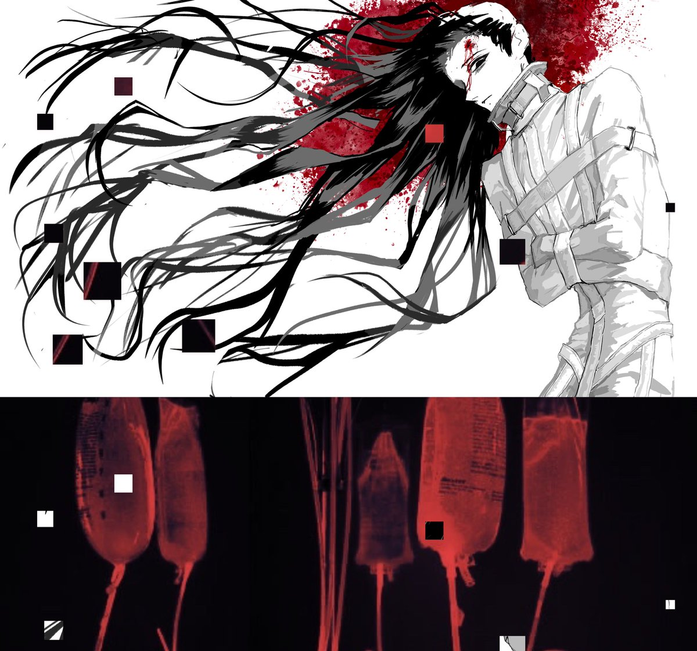

Cu
@copper1234000
嗯…如果动作的方向不冲我，而是冲他的话…Mon的话生气阈值很高
骂他？笑着骂回去
侵占他私人空间？领地意识不在物理上
侮辱他人格/主体性？不好意思你谁啊胆敢质疑我
冥思苦想很久…怎么对他能让他真正动怒…
得出来的是——直接把他当有问题的人对待。
明明他是正常的，但给他穿上拘束服，控制起来，用暴力手段镇压，关起来…
…
然后此男真正生气就不会笑了。死水一样…超恐怖。感觉是君子报仇十年不晚，五十年不晚，一百年还不晚的那种…
好色哦。
